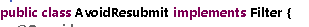
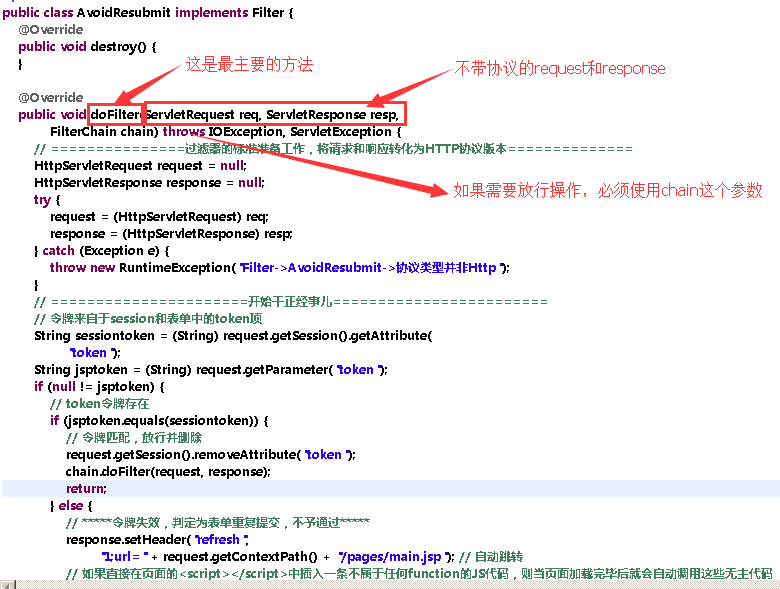
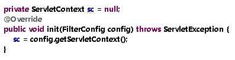
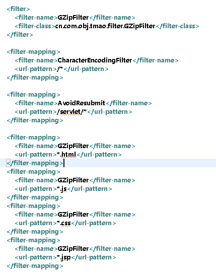
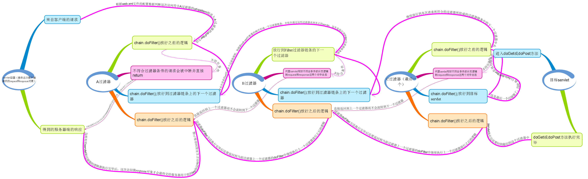

第一步，首先创建创建一个类，并实现Filter接口

然后覆盖两个最重要的方法

这里之所以使用config获取ServletContext是因为，只有如此才能获取到真正的ServletContext，这也是init()方法的作用，目的就是为接下来在doFilter()中的工作做准备。
第二步，配置web.xml文档

由于MyEclipse中不能像servlet那样自动创建filter因此我们需要手动配置web.xml文件。需要注意的是如果你在创建工程的时候使用了J2EE 7及以上版本则可能会让web.xml的b版本为2.3，这一版本中filter必须配置到servlet之前，但如果实用的是J2EE 6 则web.xml就会使用3.0版本z在这个版本中就没有这样的约束了。
从图中我们看到url-patter属性规定这个过滤器所要过滤的目标虚拟路径的通配符映射，其他的就跟servlet类似了。
第三步，当前两步完成后web应用随着服务器启动并加载后所有过滤器就开始起作用了，之后对任何属于通配符映射规范的url请求都会首先通过过滤器中doFilter()中逻辑的处理，如果同时需要有多个过滤区响应，则会按照在web.xml中的配置顺序依次放行，也就是前面的过滤器在执行了chain.doFilter()后如果它后面还有符合虚拟路径拦截规则的过滤器则会进入下一个过滤器的doFilter方法，直到它是最后一个过滤器在执行doFilter后才会真正进入servlet中去，如果在这一个过程中任何一个过滤器出现直接return则这次请求也就被终止的。但需要注意，在return前你需要在当前这个filter中用responsex写好告知信息，否则用户浏览器会收到没有任何文字提示的response而不知所措。
另外需要记住的是servlet能做到的事情，Filter一样能做，而且Filter还能觉得这次请求是否放行给真正的servlet。我们可以把filter看作是一道道横在servlet之前的防火墙，其作用跟Struts2的Interceptor一样都是将可以复用的公共逻辑提取出来，而在Action中和servlet(Service)中才是真正当前项目所需要的个性业务逻辑。

能够非常好地体现Filter过滤器链条思想的实例就是高级技术应用中的Gzip压缩的过滤器设计。